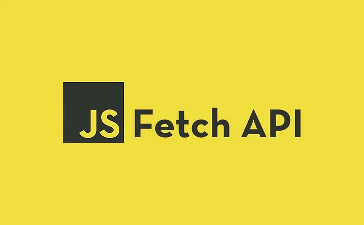
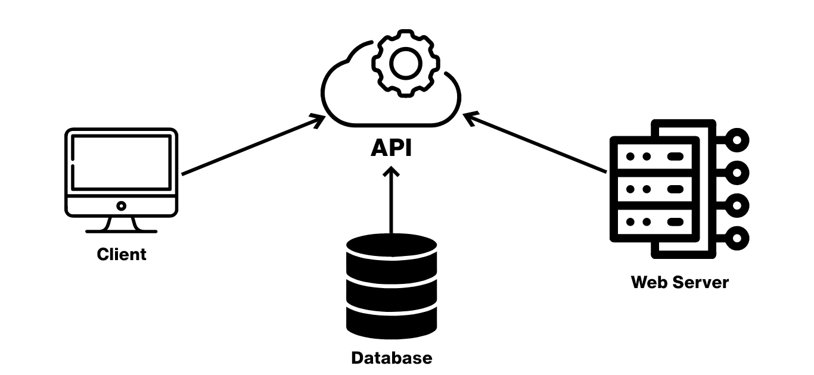
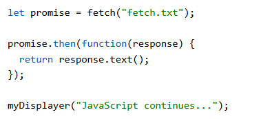
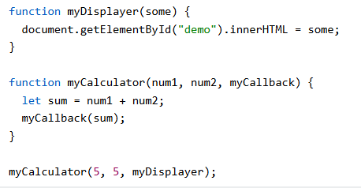

Async/Await
async/await omogućuje da asinkroni kod pišemo i čitamo jednostavno poput običnog sinkronog koda. Ključna riječ await privremeno zaustavlja izvršavanje funkcije dok čekamo da zatraženi podaci stignu.

JavaScript Fetch API je moderno sučelje u JavaScriptu koje služi za slanje mrežnih (HTTP) zahtjeva i dohvaćanje podataka s poslužitelja (servera), poput JSON-a, slika ili običnog teksta.

API (skraćenica od Application Programming Interface, odnosno aplikacijsko programsko sučelje) je skup pravila, protokola i alata koji omogućuje da dva ili više različitih softverskih sustava međusobno komuniciraju i razmjenjuju podatke.
Primjerice, prilikom online kupnje web trgovina koristi API pružatelja platnih usluga (poput PayPala) kako bi potvrdila transakciju, bez potrebe za izravnim pristupom bankovnim podacima korisnika. API u tom procesu djeluje kao posrednik koji šalje zahtjev i vraća odgovor u stvarnom vremenu.
async/await omogućuje da asinkroni kod pišemo i čitamo jednostavno poput običnog sinkronog koda. Ključna riječ await privremeno zaustavlja izvršavanje funkcije dok čekamo da zatraženi podaci stignu.
Kod biranja api-a gledamo je li besplatan ili je plačen. Kada izaberemo api možemo gledati i birati sve podatke koji se nude.

Promise je moderniji objekt koji predstavlja vrijednost koja možda još nije tu, ali će stići u budućnosti. Može završiti uspješno (resolved / fulfilled) ili s greškom (rejected), a omogućuje puno čišći rad s metodama.
Stariji XHR zahtijevao je složeniji i duži kod, oslanjao se na nepraktične povratne pozive umjesto modernih rješenja te je imao manje intuitivno upravljanje pogreškama i provjeru stanja.

JavaScript povratni poziv (engl. *callback*) jest funkcija koja se prosljeđuje kao argument drugoj funkciji, a zatim se u nekom kasnijem trenutku izvršava kako bi obavila određeni zadatak.